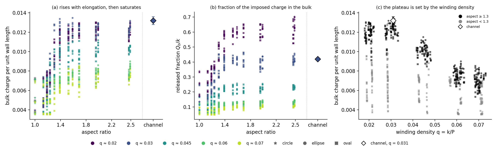

MPCD reproduces it: bulk +½ on 𝒬 = 0 lines, −½ in rotation-dominated cores
Escapers pass a rotation-dominated phase (one-sided lobe), then land on a 𝒬 = 0 line: 89% at departure
6 · Escape dynamics
Force balance: elasticity is a weak backstop
t − tdep
measured vin
model
jet
background
elastic
−20
0.01
0.03
0.06
−0.03
−0.02
−10
0.06
0.06
0.09
−0.02
−0.02
−4
0.14
0.12
0.14
−0.01
−0.02
Normal mobility μn ≈ 0.0016 ± 0.0004: −12 kBT/cell is only −0.02 cells/t.u. of drift. Untilting raises the inward projection; each cell of depth lets more jet through → runaway.
Untilting is driven, not rotational diffusion: a Langevin model with the residents' drift reproduces their excursions but not the escapers' 40 t.u. ramp.
7 · What sets the steady state
The tilt gates the traffic, not the population
λ test (λ 2 → 4): escapes drop ×10, as predicted — but the same gate slows refills too (exits ×6, entries ×3.7), so the wall count barely moves (7.1 → 7.65)
Not an elastic minimum: refilling a gap would lower the Frank energy by 80–100 kBT (ellipses and ovals)
Unique: seeded starts with 4, 7, 10 wall defects all converge to 7.2 ± 0.1 (circles to 10)
Self-limited by crowding: a sparser layer holds its defects more strongly
A dynamical balance of escapes and refills, far above the elastic optimum
7 · A wall law
Bulk charge per unit wall length

Saturates by aspect ≈ 1.5, size-independent: Qb ≈ c(q) · P (∝ √area at fixed winding density q = k/P)
Circles are the exception: exactly +1 at every size
7 · The flat limit
Periodic channels with winding anchoring
Arclength rule → θ = θ0 ± 2πqx on the two walls; charge 2qL per period (new solver option)
Same wall law: 39–46% of the charge in the bulk at q = 0.031, any width 20–60 (aspect-2 ellipse: 40%)
Released +½ hover 5–18 cells off the wall; mobility separates them from the slow layer
Possible follow-ups: vortex rows/dancing with winding; mixed windings as a "topological capacitor"
Summary
The story in four lines
1. Anchoring winding → 2k−2 sites; coherent active flow tilts the layer and ejects two defects: bulk +1.
2. The tilt is flow alignment in the no-slip shear: τ = arccos(1/λ), confirmed for λ = 2–6.
3. Wall defects are protected by tilt and by the wall (jet turned along it, one lobe erased); untilting + jet → runaway escape.
4. Elongated cavities leak to a unique dynamical steady state that follows a wall law, Qb ≈ c(q)·P.
Open questions
Where we'd like your input
What starts the untilting? (no local flow precursor; weak crowding / empty-front signals)
The λ threshold of the circle state vs R/ℓa (size scan running)
MPCD vs continuum for negative winding (MPCD: 13–13.5 wall −½, unique; continuum: 14 + bulk +1)
Paper scope and venue: PRL (circle + tilt law) + companion, or one longer paper?